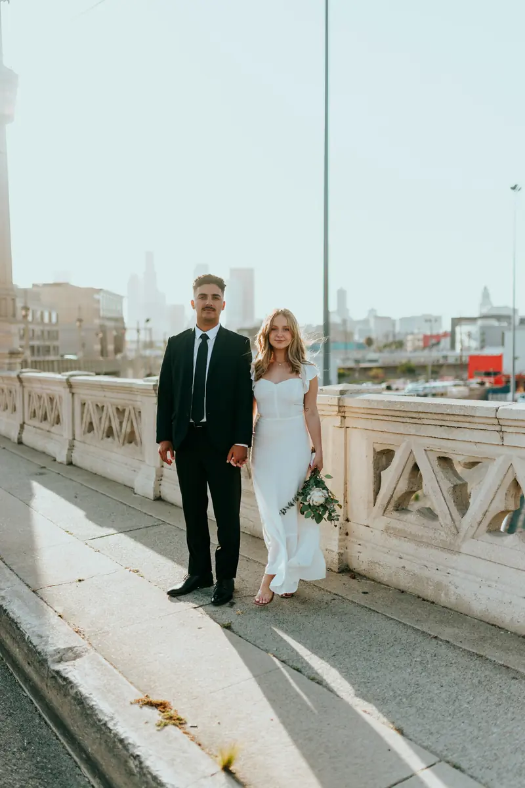
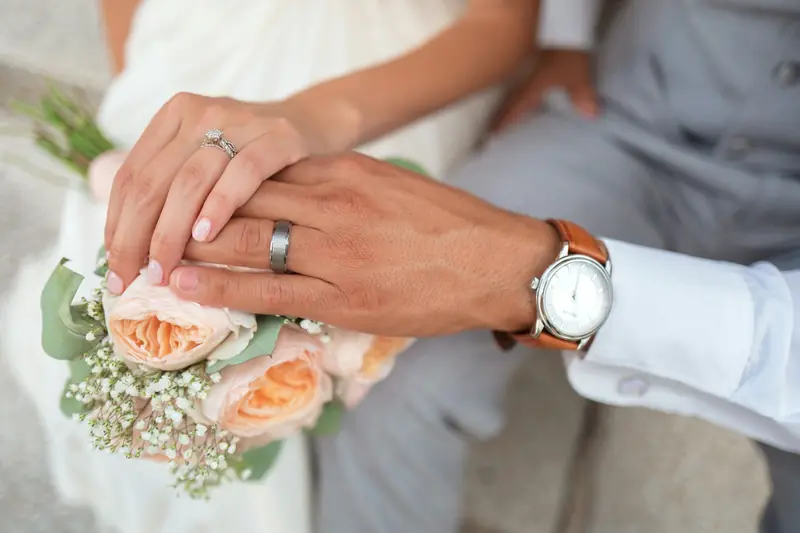

City, Softened
A quiet moment in a busy world. A photographic study in connection, texture and natural portraits.





This gallery combines credited stock photographs to demonstrate the website’s story experience. It represents a visual direction, rather than a client wedding. View image credits.
Tell me about your plans.
A place, a date, a little about the two of you.